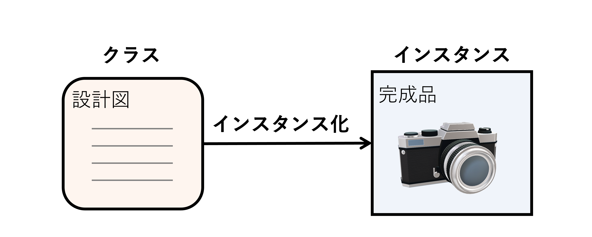
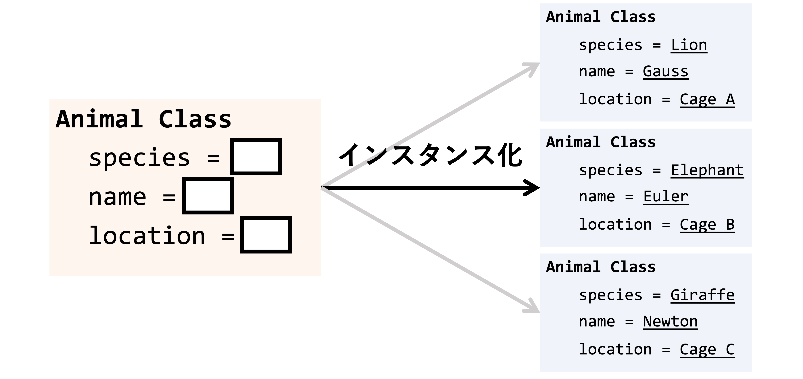
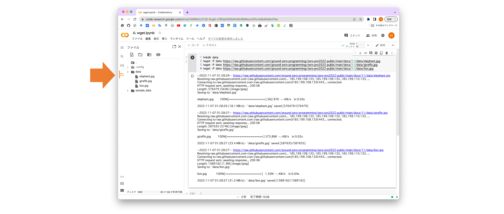
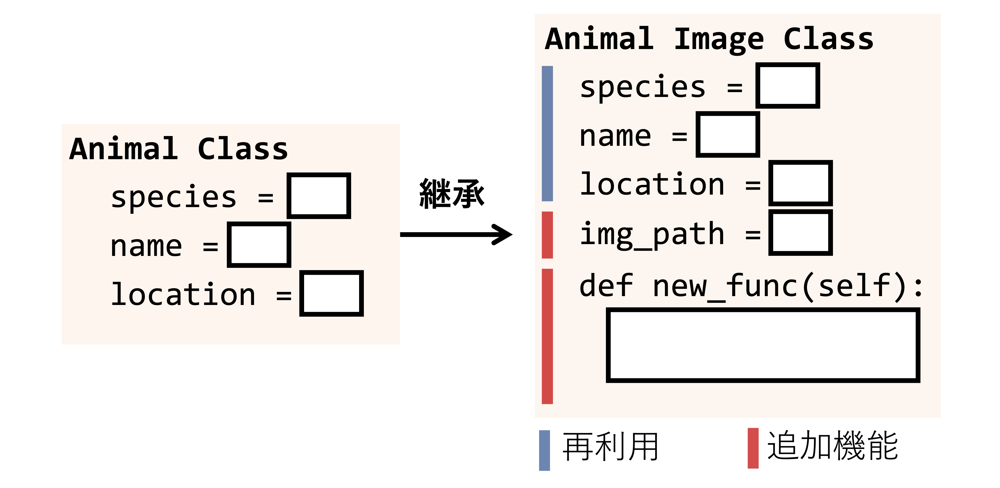

第10回：アプリケーションの作成（講義）
Contents
第10回：アプリケーションの作成（講義）#
担当：相澤宏旭
内容#
第10回目の講義では，Pythonだけでなくオブジェクト指向型プログラミング言語において重要なクラスの概念を学ぶ．クラスは関数以上に理解に手間取るプログラミングの仕組みであるが，使いこなすことができれば，非常に便利な仕組みである．また，クラスはこれまでの講義中にも実は登場している．詳細は後述するが，まず初めにクラスとは何か？関数との違いは？どのような場面で利用されるのか？について簡単に紹介したあと，データを管理する簡単なアプリケーションをクラスを利用して作成する．最終的に，画像を表示する機能や画像を保存する機能といった画像処理機能を作成したアプリケーションに追加する（発展課題を含む）．具体的には，以下の項目について理解し，クラスを使いこなせることが本講義の目標である．
クラスの定義方法，クラスとインスタンス化の概念を理解する．
インスタンス変数，インスタンスメソッドを定義できる．
【発展】他クラスから継承し，新たなクラスを作成できる．
クラスとは？#

クラス（class） とはデータの値や処理の振る舞いのルールを記述できる仕組みである．クラスや振る舞いのルールを理解するために，図に示すような設計図をイメージされたい．私たちは何かモノを作るとき，モノの情報や作り方を決めた設計図を予め作成し，その設計図をもとにモノを作成する．例えば，カメラの場合だと，製品名，大きさ，デザイン，レンズ，写真の保存の仕方など製造するためのあらゆる情報が設計図には記載されている．そして，設計図からカメラを製造し，完成品ができる．クラスはこの一連の手順に含まれるモノの設計書としてイメージすると良い．そして，後述するが，Pythonでは設計図をもとに作成された完成品を インスタンス または オブジェクト といい，インスタンスを作成することを インスタンス化 という．
また，発展的な内容であるが，カメラの性能をアップデートしたり，デザインを変更した改良品の設計図を作成したい場合もある．Pythonでは，改良前の設計図をベースに新たな設計図を作成する 継承 という仕組みもサポートされている．クラスの簡単なイメージは以上であるが，厳密な定義や詳細な機能はゼロからはじめるプログラミングの内容を大幅に超えるため，本講義では，クラスがどのような場面で便利なのか？という視点から必要最低限の機能を紹介したい．
クラスの利用場面#
次の機能を持つプログラムを作成する場面を想定されたい．あなたは動物園の管理者で種に基づいて名前，飼育場所，画像などをコンピュータで管理する必要がある．そして，あなたの働いている動物園には，ライオン（Lion），ゾウ（Elephant），キリン（Giraffe）が飼育されており，それぞれ，ガウス（Gauss），オイラー（Euler），ニュートン（Newton）と名前が付けられ，異なるケージで飼育されている．これまでの知識を利用して {動物種}の{名前}は{飼育場所}で飼育されています． と print してみる．
このような複数データを扱う場合，リストが便利であった．
species = ['Lion', 'Elephant', 'Giraffe']
names = ['Gauss', 'Euler', 'Newton']
locations = ['Cage A', 'Cage B', 'Cage C']
print文を使って煩雑なコードであるが以下のように出力できる．
for i in range(3):
print(f'{species[i]}の{names[i]}は{locations[i]}で飼育されています．')
LionのGaussはCage Aで飼育されています．
ElephantのEulerはCage Bで飼育されています．
GiraffeのNewtonはCage Cで飼育されています．
出力することができた．では，ケージDで飼育されているアルパカのポアソンを追加する．
species = ['Lion', 'Elephant', 'Giraffe', 'Alpaca']
names = ['Gauss', 'Euler', 'Newton', 'Poisson']
locations = ['Cage A', 'Cage B', 'Cage C', 'Cage D']
for i in range(4):
print(f'{species[i]}の{names[i]}は{locations[i]}で飼育されています．')
LionのGaussはCage Aで飼育されています．
ElephantのEulerはCage Bで飼育されています．
GiraffeのNewtonはCage Cで飼育されています．
AlpacaのPoissonはCage Dで飼育されています．
出力することができた．（少量のデータであれば）複数個のデータをリストを用いて管理できることがわかった．
しかしながら，4頭しか飼育していない動物園は稀である．次のような場面を想像されたい．
飼育している動物が100頭以上いたらどうなるだろうか？
体温や体重など定期的に更新する必要があるデータを管理したいときはどうすればいいか？
繁殖に成功し，新たにライオンを追加したいときはどうすればいいだろうか？
動物の画像や説明文なども一緒に管理したり，画像を出力するためにはどうすればいいだろうか？
リストで管理しようと思うと，データが増えたり，新たな情報や機能を追加しようとしたとき，再度リストの定義を行い，プログラムを大きく書き換える必要がある．range関数や繰り返し処理の導入理由と同じように，大量のデータを持つ複数のリストの管理はデータの管理やコードの可読性の問題からプログラム作成者にとって非常に大変な作業となる．そこで便利なのがクラスという仕組みである．以降，発展内容を含むが上記の例をベースにクラスを説明する．
Tip
クラスはPython特有の仕組みではなくC++やJavaなどオブジェクト指向型言語が持つ機能である．詳細は専門科目またはさらに勉強したい人へのPythonプログラミングを参考にされたい．
【発展】 zip文による複数データの処理#
zip文は発展内容として位置付けられていたがこのような場面では便利な関数であり，zip文を使ってspecies，names，locationsを同時に繰り返すこともできる．詳細は繰り返し処理の zip関数の使い方 を参考されたい．
for n, s, l in zip(names, species, locations):
print(f'{s}の{n}は{l}で飼育されています．')
LionのGaussはCage Aで飼育されています．
ElephantのEulerはCage Bで飼育されています．
GiraffeのNewtonはCage Cで飼育されています．
AlpacaのPoissonはCage Dで飼育されています．
クラスの作成#

クラスは以下のように class を使うと定義することができる．以下はクラスの定義例である．
class クラス名:
def __init__(self):
初期化処理
classに加えて__init__とselfという新たな処理と名前が登場した．簡単に説明すると，__init__はクラスからデータを作成したときに一度だけ実行される初期化処理（初期化メソッド）である．またselfはクラス自身を示す変数である．selfはインスタンス変数と呼ばれるクラスに保存された変数にアクセスするために利用される変数である．詳細は後述する．
これ以外にも，クラスには複数の機能がサポートされており，書き方にはさまざまな流儀がある．まずはコピー&ペーストでいいので使い方に慣れてほしい．
上図に示すような動物を管理するためのAnimalクラスを以下のように定義する．
class Animal:
def __init__(self):
print('動物クラスを作成しました')
上記のセルはクラスが持つルール（ここでは初期化メソッドのみ）を定義した．ここではクラスがもつ処理を定義しただけなので利用するためにはクラスからデータの実体を作成する必要がある．これを インスタンス化 といい，クラスから作成されたデータの実体を インスタンス または オブジェクト という．
a = Animal()
動物クラスを作成しました
上記のセルを実行して，動物クラスという__init__内の処理が実行されたことが確認できた．これがクラスのインスタンス化とAnimalの初期化処理である．
【発展】 リストで学ぶインスタンス化#
クラスとインスタンスはプログラミング初学者にとって非常にわかりにくい概念である．よくある説明例としては，前述のようにクラスは設計図，インスタンスは設計図をもとに作成されたモノであるというものである．もし，この説明例で理解ができなかったとしても，利用するだけなら容易であるため心配は不要である．第2回で学んだ リスト を思い出してほしい．リストの作成は既にできるはずである．
l = [1, 2, 3] # リストクラスからインスタンスの作成
print(l)
[1, 2, 3]
実は，上記の処理はリストの振る舞いを定義した設計図（クラス）からリストの実体 l を作成（インスタンス化）しているのである．ゼロから始めるプログラミングではクラスが利用できるだけも十分である．プログラムの内部の挙動や仕組みを理解する前に，コードを写径し，とりあえず実行してみることも大切である．
インスタンス変数の作成#
続いて，selfを理解するために，Animalクラスに種，名前，飼育場所を追加してみる．以下のように，__init__を書き換えることで実装できる．
class クラス名:
def __init__(self, variable):
self.variable = variable
初期化処理を行う__init__関数の引数に変数（variable）が加えられ，関数内部で self.variable = variableの処理が追加された．
前者の引数は関数の回で学んだ．後者の処理はクラス自身を表す self に変数 variable を代入する処理である．言い換えると，クラス内部に変数 variable を保存する処理である．このクラスが持つ変数は インスタンス変数 と呼ばれ，この処理によってデータを保持できるのである．
class Animal:
def __init__(self, species):
self.species = species
クラスからインスタンスを作成する．__init__に種を与える変数 species が加えられているのでインスタンス化のときに種の名前を与える．
a = Animal('Lion')
今回は，__init__でprintをしていないので文字列が出力されていないことに注意されたい．インスタンス変数を出力するためには インスタンス.インスタンス変数名で変数にアクセスする．
a.species
'Lion'
続いて，名前と飼育場所も追加したクラスを作成する．
class Animal:
def __init__(self, species, name, location):
self.species = species
self.name = name
self.location = location
a = Animal('Lion', 'Gauss', 'Cage A')
print(f'{a.species}の{a.name}は{a.location}で飼育されています．')
LionのGaussはCage Aで飼育されています．
また，他の動物のインスタンスも作成してみる．
a = Animal('Lion', 'Gauss', 'Cage A')
b = Animal('Elephant', 'Euler', 'Cage B')
c = Animal('Giraffe', 'Newton', 'Cage C')
異なるインスタンス変数が定義されていることが以下のセルからわかる．
print(f'{a.species}の{a.name}は{a.location}で飼育されています．')
print(f'{b.species}の{b.name}は{b.location}で飼育されています．')
print(f'{c.species}の{c.name}は{c.location}で飼育されています．')
LionのGaussはCage Aで飼育されています．
ElephantのEulerはCage Bで飼育されています．
GiraffeのNewtonはCage Cで飼育されています．
Caution
インスタンス変数は実行の手順からわかるように，インスタンス化 されて初めてクラスに保存される変数である．また __init__ 内部で variable と self.variable はそれぞれ引数によって与えられた変数，インスタンスが持つ変数であることに注意されたい．これらの変数は意味が異なるのである．
インスタンスメソッドの定義#
前述のセルでは作成した3つのインスタンスに対して print 文を呼び出した．データの管理はリストから容易になったが，処理は不便なままである．そこで，クラスが持つ機能を新たに追加する．このクラスが持つ機能は インスタンスメソッド または インスタンス関数 と呼ばれ，以下のように定義できる．
class クラス名:
def __init__(self, variable):
self.variable = variable
def メソッド名(self, 引数):
処理
__init__と同じ深さのインデントで新たなメソッド（処理）を定義している．これがインスタンスメソッドである．メソッドの第一引数は self を指定する．以下が，前述の print をインスタンスメソッドとして定義した Animal クラスである．
class Animal:
def __init__(self, species, name, location):
self.species = species
self.name = name
self.location = location
def print_data(self):
print(f'{self.species}の{self.name}は{self.location}で飼育されています．')
初期化メソッド（__init__）で self.species = species でクラスが持つインスタンス変数を作成したが，このとき，上記のインスタンスメソッド内で self.species でインスタンス変数にアクセスしていることに着目されたい．後述するが，print_data で引数として species を与えることなく，このような処理が設計できることがポイントであり，第8回で学んだ関数との大きな違いである．
インスタンス化をする．
a = Animal('Lion', 'Gauss', 'Cage A')
b = Animal('Elephant', 'Euler', 'Cage B')
c = Animal('Giraffe', 'Newton', 'Cage C')
インスタンスメソッドは インスタンス名.インスタンスメソッド名(引数)で呼び出すことができる．
a.print_data()
b.print_data()
c.print_data()
LionのGaussはCage Aで飼育されています．
ElephantのEulerはCage Bで飼育されています．
GiraffeのNewtonはCage Cで飼育されています．
もちろんインスタンス関数は第8回で学んだ関数のようにreturnもできる．動物の情報をリストとしてreturnする．
class Animal:
def __init__(self, species, name, location):
self.species = species
self.name = name
self.location = location
def print_data(self):
print(f'{self.species}の{self.name}は{self.location}で飼育されています．')
def get_data(self):
animal_data = [self.species, self.name, self.location]
return animal_data
リスト型のデータがreturnされる．returnされたデータを出力する．
a = Animal('Lion', 'Gauss', 'Cage A')
animal_data = a.get_data()
print(animal_data)
['Lion', 'Gauss', 'Cage A']
以上より，クラスにデータだけでなく機能（関数）を追加することができた．ここまででもリストと比較して便利にデータを管理できる．
Tip
上記のreturnは第8回 複数の戻り値を利用せずに単一のリストでreturnしている．タプルで複数の戻り値として実装することもできる．
【発展】 インスタンスメソッドをクラス内で呼び出す#
インスタンスメソッドもまたインスタンス変数と同じようにクラス内で呼び出すことができる．self.インスタンスメソッド名(引数)で呼び出すことができる．以下のコードを参考にされたい．
class Animal:
def __init__(self, species, name, location):
self.species = species
self.name = name
self.location = location
def print_data(self):
print(f'{self.species}の{self.name}は{self.location}で飼育されています．')
def get_data(self):
animal_data = [self.species, self.name, self.location]
return animal_data
def check_data(self):
animal_data = self.get_data()
print(animal_data)
上記のAnimalクラスにはインスタンスメソッドget_dataをインスタンスメソッド内で呼び出すcheck_dataが追加で含まれている．get_dataをインスタンスメソッド内で呼び出せることを確認するために，インスタンス化して，check_dataメソッドを呼び出す．
a = Animal('Lion', 'Gauss', 'Cage A')
a.check_data()
['Lion', 'Gauss', 'Cage A']
get_dataが呼び出されて，前述の例と同様の結果が得られたことがわかる．
【発展】 リストで学ぶインスタンスメソッド#
発展内容であったが既に学んだ リスト の実態はリストの挙動がまとめられたクラスからインスタンス化されたデータであると説明した．リストは以下で定義できた．
l = [1, 2, 3] # リストクラスからインスタンスの作成
print(l)
[1, 2, 3]
ここで，再度，第2回の リストの演算 にある要素の追加・削除・挿入の説明を読み返してほしい．例えば，要素を追加したいときは，リスト.append(追加する値)と呼び出すとあった．
l.append(100)
print(l)
[1, 2, 3, 100]
実は，このappendはインスタンスメソッドなのである．本講義では，クラス・インスタンス変数・インスタンスメソッドなど聞きなれない用語が多数現れるが，各データ型が持つ機能を調べさえすればプログラミングは容易にできるのである．言い換えると，クラスの概念をある程度理解できれば，リストの機能を拡張したり，データ型自体を定義するといったことができるようになる．
【発展】 関数とインスタンスメソッドの違い#
ここまでのインスタンスメソッドの定義方法と利用場面を理解できた受講者はおそらく「関数とインスタンスメソッドの違いってなんだろう？」と疑問に思うだろう．厳密な違いを理解するためには，オブジェクト指向プログラミング そのものの説明が必要であり，ゼロからはじめるプログラミングの内容を大きく超えてしまうのでここでは以下のサンプルコードからこの違いを説明したい．
第8回の講義で学んだように関数は与えた入力に対してなんらかの処理をして出力する変換装置のイメージであった．上記の例と同様に， {動物種}の{名前}は{飼育場所}で飼育されています． と print する関数を考える．
def print_data(species, name, location):
print(f'{species}の{name}は{location}で飼育されています．')
print_data('Lion', 'Gauss', 'Cage A')
LionのGaussはCage Aで飼育されています．
上記のように print_data関数で飼育動物の情報を出力できる．実装する機能によっては関数で十分であるが，引数をその都度渡す必要があり，クラスの利用場面で述べたように膨大なデータ数を管理したり，データの構造をカスタマイズしたいときなど不便となる場合がある．
一方，インスタンスメソッドの例として前述したクラス内に定義された print_data関数を思い出してほしい．
a = Animal('Lion', 'Gauss', 'Cage A')
a.print_data()
LionのGaussはCage Aで飼育されています．
この関数も同様の出力を得られるが，以下の2点が関数と異なる．
インスタンス変数を呼び出すことができる．
クラスに紐付けられている．
1点目は両者の引数を見てもわかるだろうが，インスタンスメソッドはメソッド内で引数に与えることなくインスタンス変数を参照できる．そのため，呼び出すたびに引数を指定する必要がなく，インスタンス変数に関係した機能を定義することができる．これと関連するが，インスタンスメソッドはクラスに備わっている関数であるため，類似した機能を持つクラスを定義するときや，複数のデータをクラスで管理するときに便利な仕組みとなる．詳細はリストによるクラスの管理やクラスの継承で後述する．クラスにおけるインスタンスメソッドは，関数の仕組みを インスタンス変数 で拡張した仕組みとも言える．
また前述のリストで学ぶインスタンスメソッドを読むと，リストの要素を定義するインスタンス化の処理が必要であること，リストに新たな要素を追加する処理は関数よりもインスタンスメソッドとして定義されている方が便利であることがイメージできる．
クラスのまとめ
クラスは変数や処理（関数）をまとめた設計図のような機能である．
このとき変数はインスタンス変数，処理はインスタンスメソッドと呼ばれる．
クラスからデータの実態を作成するためにインスタンス化という手順が必要である．
インスタンス化をしたとき初期化メソッドである
__init__が呼び出される．
クラス自身は
selfから参照できる．
画像表示機能の追加#
作成した Animal クラスに画像表示機能を追加する．
まずは表示する画像をダウンロードする．Google ColabではLinuxのコマンドが利用できるので以下のセルを実行すると data フォルダの中に画像ファイルがダウンロードされる．また，以下のセルは講義資料上では，mkdir: data: File existsやzsh:1: command not found: wgetとエラーが表示されているが，Google Colab上で実行すると正しく実行される．
!mkdir data
!wget -P data https://raw.githubusercontent.com/ground-zero-programming/zero-pro2022-public/main/docs/11/data/elephant.jpg
!wget -P data https://raw.githubusercontent.com/ground-zero-programming/zero-pro2022-public/main/docs/11/data/giraffe.jpg
!wget -P data https://raw.githubusercontent.com/ground-zero-programming/zero-pro2022-public/main/docs/11/data/lion.jpg
mkdir: data: File exists
zsh:1: command not found: wget
zsh:1: command not found: wget
zsh:1: command not found: wget
Linuxコマンドを覚えるとファイルやフォルダの操作などをCharacter-based User Interface（CUI）で行うことができる．発展的な内容なので上記のセルは実行するだけでいいが，セル内では，!mkdir dataでGoogle Colab内にdataという名前がついたフォルダを作成し，以降の!wget -P data {URL}でURLにある画像ファイルを先ほど作成したdataフォルダにダウンロードするという操作をしている．
ダウンロードされたファイルは下の画像のフォルダアイコンをクリックすると確認できる．

Caution
上記のセルは一度だけセルを実行すれば良い．複数回実行すると elephant 2.jpgと複数の画像が保存される（複数枚画像があっても問題はありません）．
続いて，Pythonで画像を表示する機能を追加する．画像を管理・読み込み・表示するために os，PIL，Matplotlibというライブラリを利用する．ライブラリは便利な関数やクラスをまとめたものであり，例えば，PILは画像を読み込んだり，編集したり，保存したりするための関数やクラスが提供されている．ライブラリにまとめられている関数やクラスは モジュール として扱われ，後述するセルのように簡単に利用することができる．ライブラリ，モジュール，importに関する説明は次回の講義で紹介するので，ここでは，これらのライブラリを使って画像を読み込み，表示するサンプルコードをコピー&ペーストでいいので動かしてほしい．
# 必要なライブラリのインポート
import os # 画像を保存するためのライブラリ
from PIL import Image # 画像を読み込むためのライブラリ
import matplotlib.pyplot as plt # 画像を出力するためのライブラリ
%matplotlib inline
これまでに作成したAnimalクラスをコピー&ペーストして画像を表示するためのインスタンスメソッド plot_image を追加したAnimalImageクラスを定義する．
plot_image内の処理は以下である．コメントも参考に確認してほしい．
画像の保存されたパスをインスタンス変数として管理
PILという画像関連のライブラリを用いて画像を保存したパスから読み込むmatplotlibを利用して画像を表示するための準備をする画像のタイトルを設定
画像を表示
パスについて
パスというのは画像のファイルが保存されている場所を示す．ここでは，data/lion.jpgとしてパスを引数に与えているが，与えたパスを読み解くと，実行するプログラム（このJupyter Notebook）がある場所を起点にdataフォルダ内のlion.jpgという画像を示している．
class AnimalImage:
def __init__(self, species, name, location, img_path):
self.species = species
self.name = name
self.location = location
self.img_path = img_path # 1. 画像の保存されたパスをインスタンス変数として管理
def print_data(self):
print(f'{self.species}の{self.name}は{self.location}で飼育されています．')
def get_data(self):
animal_data = [self.species, self.name, self.location]
return animal_data
# 画像を表示するためのインスタンスメソッド
def plot_image(self):
img = Image.open(self.img_path) # 2. `PIL`という画像関連のライブラリを用いて画像を保存したパスから読み込む
plt.figure() # 3. `matplotlib` を利用して画像を表示するための準備をする
plt.title(self.name) # 4. 画像のタイトルを設定
plt.imshow(img) # 5. 画像を表示
定義した AnimalImage クラスをインスタンス化
a = AnimalImage('Lion', 'Gauss', 'Cage A', 'data/lion.jpg')
画像を表示する plot_image を呼び出す．
a.plot_image()
画像を表示することができた．しかしながら，機能や変数を追加する度に，クラスをコピー&ペーストして再定義するのは大変である．そこで，次は，継承 という機能を使ってAnimalクラスの情報を引き継いで同様のAnimalImageクラスを実装することを試みる．
Tip
本講義では アプリケーションの作成 ということであったが，クラスの説明のボリュームが想定以上の量となってしまったため，画像を表示する機能のみをクラスを用いて作成した．スマートフォンで普段利用しているアプリケーションとは程遠いプログラムとなってしまったが，本講義の演習に画像の大きさを変更し，保存する機能を追加する発展演習を作成したのでぜひ挑戦してほしい．また，クリックなど視覚的かつ対話的に操作が行える グラフィカルユーザインターフェース(Graphical User Interface)の機能もPythonでは提供されている．Google ColabやJupyter Notebook上でGUIアプリケーションを作成したい場合は，ipywidgetsというライブラリを利用すると良い．公式ページを参考に挑戦してみてほしい．
【発展】 リストによるクラスの管理#
前述までのクラスの利用方法では，ある動物に対して新たな関数やデータを追加することは便利であるが，複数の動物を管理しようとしたとき，頭数分のインスタンスメソッドの呼び出しが必要となる．発展的なテクニックであるが，インスタンスをリストで管理するとループを使って便利に管理できる．
zoo = [
Animal('Lion', 'Gauss', 'Cage A'),
Animal('Elephant', 'Euler', 'Cage B'),
Animal('Giraffe', 'Newton', 'Cage C')]
for animal in zoo:
animal.print_data()
LionのGaussはCage Aで飼育されています．
ElephantのEulerはCage Bで飼育されています．
GiraffeのNewtonはCage Cで飼育されています．
このように管理すると新たな動物を加えるときも便利である．
zoo = [
Animal('Lion', 'Gauss', 'Cage A'),
Animal('Elephant', 'Euler', 'Cage B'),
Animal('Elephant', 'Maclaurin', 'Cage B'),
Animal('Giraffe', 'Newton', 'Cage C'),
Animal('Alpaca', 'Poisson', 'Cage D')]
for animal in zoo:
animal.print_data()
LionのGaussはCage Aで飼育されています．
ElephantのEulerはCage Bで飼育されています．
ElephantのMaclaurinはCage Bで飼育されています．
GiraffeのNewtonはCage Cで飼育されています．
AlpacaのPoissonはCage Dで飼育されています．
【発展】 クラスの継承#

これまでは新たな変数や機能を追加しようとしたとき，Animalクラスの再定義が必要であった．Pythonを含むオブジェクト指向型言語には，クラスの機能を別のクラスで再利用する 継承 という仕組みが提供されている．ここでは，継承を利用して，Animalクラスを再定義することなく，動物の画像を管理する変数や機能を追加する方法について説明する．
継承の方法は以下である．class クラス名:に継承するクラス名を与えると継承するクラスのインスタンスメソッドが利用できる．super().__init__()は継承するクラスの__init__関数を呼び出している．
class クラス名(継承するクラス名):
def __init__(self, variable, new_variable):
self.new_variable = new_variable
super().__init__(variable)
def 新たに追加するメソッド名(self, 引数):
処理
継承元のインスタンス変数を利用しない場合は super()を呼び出す必要はないことに注意されたい（インスタンスメソッドのみを利用したい場合など）．
実際に，画像も管理する AnimalImageクラスをAnimalクラスから継承して作成する．
class AnimalImage(Animal):
def __init__(self, species, name, location, img_path):
self.img_path = img_path # 1. 画像の保存されたパスをインスタンス変数として管理
super().__init__(species, name, location)
# 画像を表示するためのインスタンスメソッド
def plot_image(self):
img = Image.open(self.img_path) # 2. `PIL`という画像関連のライブラリを用いて画像を保存したパスから読み込む
plt.figure() # 3. `matplotlib` を利用して画像を表示するための準備をする
plt.title(self.name) # 4. 画像のタイトルを設定
plt.imshow(img) # 5. 画像を表示
まず，継承の利点を理解するために，Animalクラスを再利用して作成したAnimalImageクラスにはAnimalクラスで定義されたインスタンス変数とインスタンスメソッドが利用できることを確認されたい．
zoo = [
AnimalImage('Lion', 'Gauss', 'Cage A', 'data/lion.jpg'),
AnimalImage('Elephant', 'Euler', 'Cage B', 'data/elephant.jpg'),
AnimalImage('Giraffe', 'Newton', 'Cage C', 'data/giraffe.jpg')]
for animal in zoo:
animal.print_data()
LionのGaussはCage Aで飼育されています．
ElephantのEulerはCage Bで飼育されています．
GiraffeのNewtonはCage Cで飼育されています．
このように再定義することなく継承元の機能を利用できることが継承の利点であり，追加したい機能だけをプログラミングすれば良い． 続いて，新たに追加した画像表示機能を呼び出す．
for animal in zoo:
animal.print_data()
animal.plot_image()
LionのGaussはCage Aで飼育されています．
ElephantのEulerはCage Bで飼育されています．
GiraffeのNewtonはCage Cで飼育されています．
継承元のメソッドと新たに追加したメソッドの両方を呼び出せることが確認できた．
今回紹介したライブラリ以外にも，Numpy や Scikit-Learn といったライブラリがある（次回以降の講義で紹介する）．ライブラリには関数やクラスとしてさまざまな機能が提供されているので興味があればチェックしてほしい．また，ライブラリを用いるとクラスを意識することなく便利な機能を利用することができるが，ReferenceやGitHubのソースコードを確認してみるとプログラミング力が身につくだろう．
Important
本講義は教養科目ということもあり，クラスの詳細な機能やオブジェクト指向型プログラミングに関する詳しい説明は省略している．また，本講義でPythonの基礎文法の内容は終了であるが，クラスだけでなく関数といったこれまで勉強した使い方以外にも，Pythonにはより綺麗で便利なプログラムを作成するための仕組みがいくつも提供されている．ぜひ，本講義資料だけでなく，さらに勉強したい人へ: Pythonプログラミングのページから自身で調べてみてほしい．